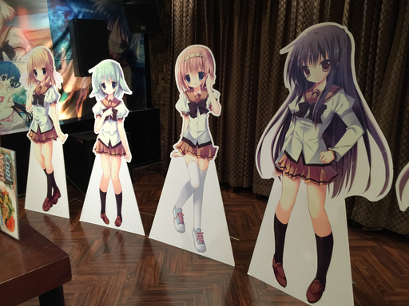
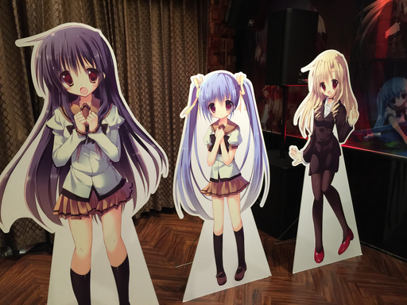
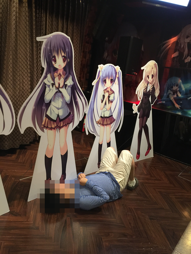
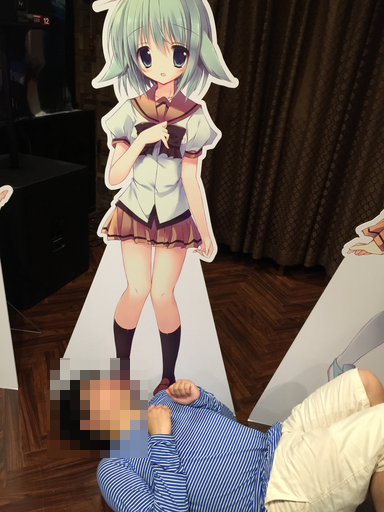
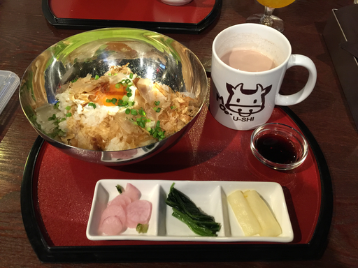
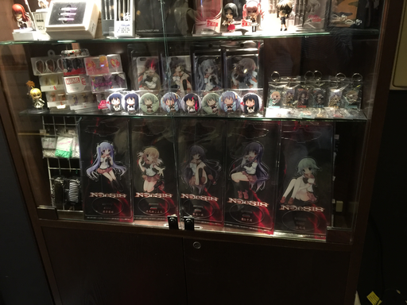

NOeSISカフェに行ってきた
NOeSISカフェに行ってきた
念願のNOeSISカフェに行ってきました！！
パセラボ コラボレーション: 人気ライトノベル携帯アプリ NOeSIS コラボレーションカフェ
注文したもの
- 憂姫ちゃん ホットココア + USHIマグカップ
- 一夜先輩 鏡の中のヨーグルトご飯
店内
 
NOeSIS定番のスカート覗き (誰かがやってたののリスペクト)
 
一夜先輩、遥ちゃんゴメンネ！！ :P
ヨーグルトご飯とUSHI

ヨーグルトご飯、すっっっっっっっっっごいおいしい！！
一夜先輩の心がこもっていたんだと思います。
物販ぽい

謎解きイベントも回りきって、オリジナルグッズをGETしました :D
帰る頃には暗くなってましたが、怪物さんが出なくて良かったです。
この記事はこちらから修正リクエストを送ることができます。
NOeSISカフェに行ってきた - github
ゴミ箱ボタンの左にある、鉛筆ボタンを押してね！